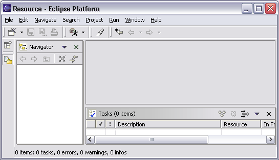

Last revised June 9, 2003
The rich client platform (RCP) is a major theme for Eclipse 3.0. This is the main plan item:
Enable Eclipse to be used as a rich client platform. Eclipse was designed as a universal tool integration platform. However, many facets and components of Eclipse are not particularly specific to IDEs and would make equal sense in non-IDE applications (e.g., window-based GUI, plug-ins, help system, update manager). The Eclipse Platform should factor out and segregate IDE-specific facilities (e.g., everything having to do with workspace resources) so that a subset of it can be used as a rich client platform for building applications. [Platform Core, Platform UI, Platform Update] [Theme: Rich client platform] (36967)
Additional plan items cover other important issues such as adding and removing plug-ins dynamically. This note discusses the overall direction, and then focuses on the UI aspects.
The primary goal of the Eclipse Platform has been providing an open IDE for integrating a wide range of development tools. This is the design center, and the current area of expertise of the Eclipse development team.
The objective of the Eclipse RCP effort is to enable Eclipse to be used in a wide range of end-user applications that are not IDEs. However, just because we want Eclipse to be useful for more than just IDEs, that doesn't mean we want to shift our focus away from building IDEs. IDEs are our bread and butter. The primary goal of the Eclipse Platform is still IDEs. Enabling Eclipse to be used for non-IDE applications is a secondary goal.
The Eclipse UI is organized around the Eclipse workbench, which is based on views, editors, perspectives. From the point of view of someone wishing to build a (non-IDE) application based on Eclipse and its workbench, the current Eclipse UI has a number of problems. You only have to look at the workbench window for a bare-bones Eclipse Platform install (i.e., with no JDT, PDE, or other plug-ins) to appreciate why.

First of all, the Eclipse workbench window contains several things that are idiosyncratic to IDEs, including: a resource perspective, a resource navigator view, and "Navigate", "Project", and "Run" menus. None of these are likely to make sense in the UI of a non-IDE application.
Second, we see that the Eclipse workbench window enshrines a set of visual design choices about how a UI is organized. For example, workbench window always has a menu bar, a tool bar, a shortcut bar, and a status line; certain colors and gradients are used consistently in banners to give things an integrated and distinctive appearance; views always have titles with certain actions in their title bar; the workbench always has "File", "Edit", "Window", and "Help" items; and a chunk of each perspective is set aside as an editor area (of which there is exactly one). Each of these choices might need to be made differently in a non-IDE application.
And there are numerous other UI-related aspects not visible in the screenshot that are an important part of the UI, including user configurability and customizability. For example, the workbench allows the user to rearrange the perspective by dragging and dropping views, and to maximize a view by double-clicking on its title bar. A non-IDE application might want to decide whether and how the user can affect the layout.
That said, the Eclipse workbench's paradigm of perspectives, views, and editors is otherwise quite useful for building applications. The proposal is to factor out the generally useful portions of the existing Eclipse workbench into a generic Eclipse workbench. The generic workbench would still be based on views, editors, and perspectives; however, it would not have any of the IDE-specific mechanisms, APIs, or extension points. The generic workbench would have no built-in actions (although we might provide certain generic action classes for applications to use as needed). The generic workbench would be configurable so that key UI policy decisions, like whether the workbench window has a tool bar, can be made by the designer of the application. The Eclipse IDE workbench would then be built atop the generic Eclipse workbench and impose particular policies that give it its distinctive IDE "personality".
The generic workbench would be located in a plug-in separate from the IDE workbench. We would likely split off text editors support as a separate plug-in so that it could be omitted in applications that do not use editors. We would create an new feature which includes the generic workbench plug-in and platform core runtime, but omits all of the IDE-specific plug-ins. This feature could also include, as optional, other Eclipse Platform plug-ins that provide general purpose functionality, such as update manager and help. Split into building blocks would give the application designer an easy way to control how much of Eclipse they need under them.